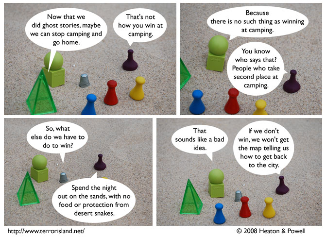

Strip #342
— Wednesday, August 20, 2008
Watch out for those snakes!
Notes, Thoughts, &c.
Ben’s Notes
This was actually filmed at a beach, not a desert.
Well, not filmed, really, but you get the idea.
Lewis’s Notes
This script was inspired by my own trip to Joshua Tree, insofar as that involved desert camping. I had shelter and food, and protection from desert snakes.